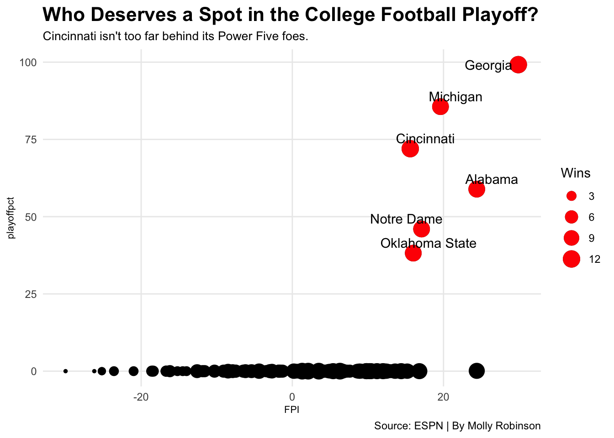
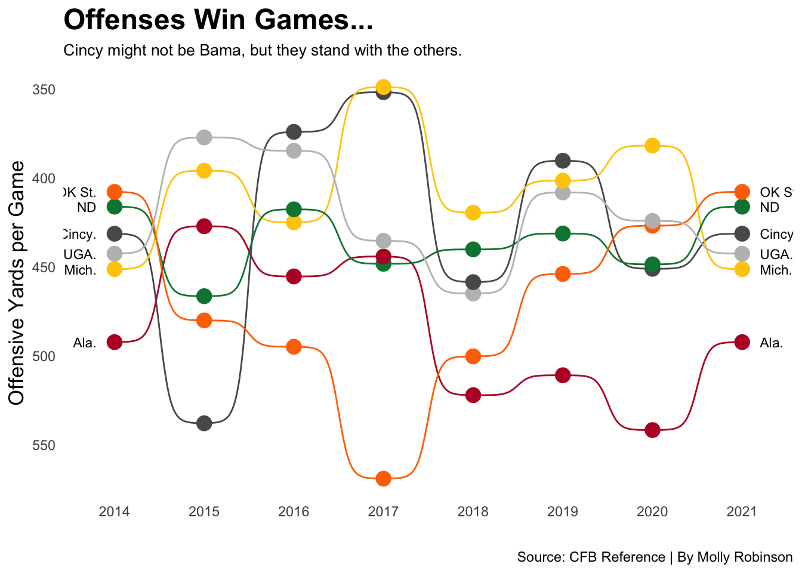
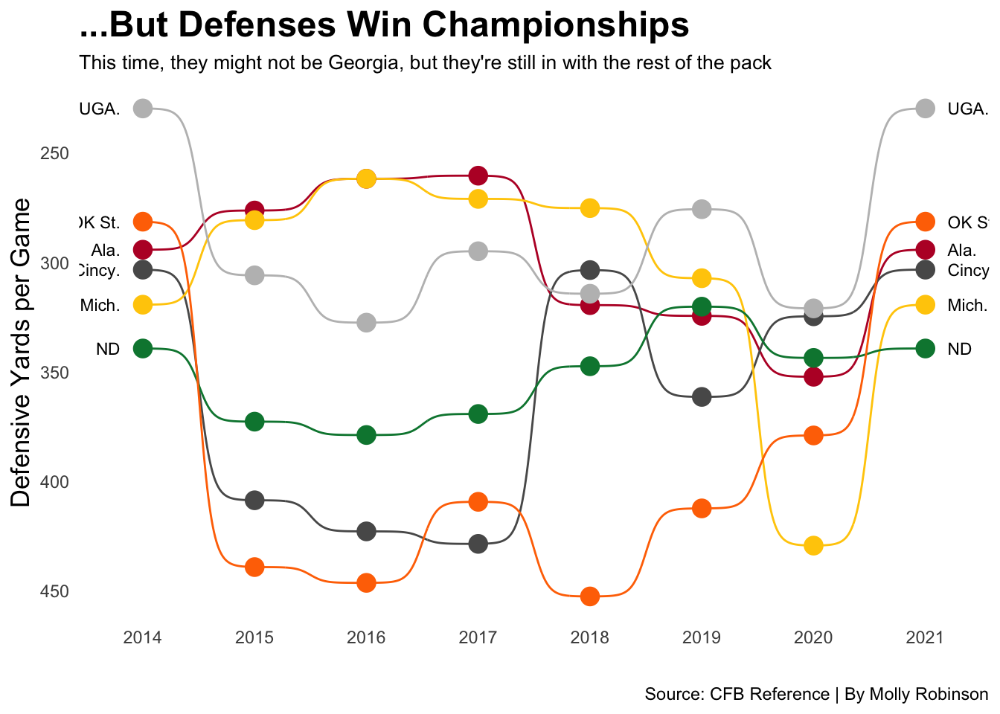
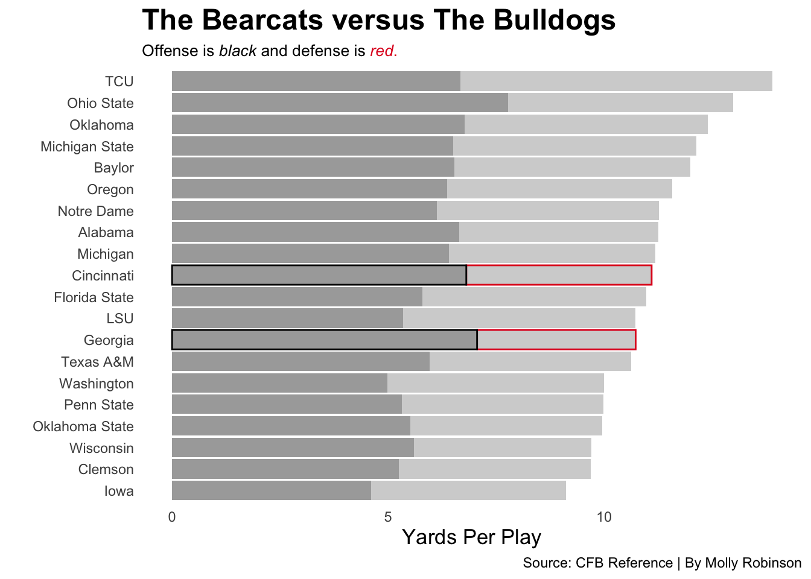

Code
library(tidyverse)
library(gt)
library(ggrepel)
library(ggalt)
library(ggbump)
library(lubridate)
library(ggtext)Molly Robinson
December 2, 2021
It’s playoff season, which means teams are hopeful to clinch a spot in the College Football Playoff. Since 2014, we’ve seen a four-team playoff for eight years. In the past seven, we’ve seen a lot of the same teams, like Alabama, Clemson, and Ohio State, and occasionally Oklahoma and Notre Dame. However, this year looks slightly different. The undefeated Cincinnati Bearcats are in the playoff conversation, and here’s why they deserve a spot among the nations top Power Five teams.
To do this, lets look at offensive and defensive stats from 2014 to now (keep in mind, this is all prior to any championship game).
offense14 <- read_csv("totaloffense14.csv") %>% mutate(Season = 2014)
defense14 <- read_csv("totaldefense14.csv") %>% mutate(Season = 2014)
offense15 <- read_csv("totaloffense15.csv") %>% mutate(Season = 2015)
defense15 <- read_csv("totaldefense15.csv") %>% mutate(Season = 2015)
offense16 <- read_csv("totaloffense16.csv") %>% mutate(Season = 2016)
defense16 <- read_csv("totaldefense16.csv") %>% mutate(Season = 2016)
offense17 <- read_csv("totaloffense17.csv") %>% mutate(Season = 2017)
defense17 <- read_csv("totaldefense17.csv") %>% mutate(Season = 2017)
offense18 <- read_csv("totaloffense18.csv") %>% mutate(Season = 2018)
defense18 <- read_csv("totaldefense18.csv") %>% mutate(Season = 2018)
offense19 <- read_csv("totaloffense19.csv") %>% mutate(Season = 2019)
defense19 <- read_csv("totaldefense19.csv") %>% mutate(Season = 2019)
offense20 <- read_csv("totaloffense20.csv") %>% mutate(Season = 2020)
defense20 <- read_csv("totaldefense20.csv") %>% mutate(Season = 2020)
offense21 <- read_csv("totaloffense21.csv") %>% mutate(Season = 2021)
defense21 <- read_csv("totaldefense21.csv") %>% mutate(Season = 2021)Now that we have offensive and defensive stats from the playoff era, let’s combine them into their years.
all14 <- offense14 %>%
left_join(defense14, by=c("Name", "G", "Season"))
all15 <- offense15 %>%
left_join(defense15, by=c("Name", "G", "Season"))
all16 <- offense16 %>%
left_join(defense16, by=c("Name", "G", "Season"))
all17 <- offense17 %>%
left_join(defense17, by=c("Name", "G", "Season"))
all18 <- offense18 %>%
left_join(defense18, by=c("Name", "G", "Season"))
all19 <- offense19 %>%
left_join(defense19, by=c("Name", "G", "Season"))
all20 <- offense20 %>%
left_join(defense20, by=c("Name", "G", "Season"))
all21 <- offense21 %>%
left_join(defense21, by=c("Name", "G", "Season"))I also wanted to look at all of the top six teams we’ve seen since 2014. There’s been a lot of consistent teams, like Alabama, who’s been in the top six every year except for one. Clemson, Oklahoma and Ohio State are even in there quite a bit. Notice Cincinnati is the only Group 5 team on here.
topsix21 <- c("Georgia", "Michigan", "Alabama", "Cincinnati", "Oklahoma State", "Notre Dame")
topsix20 <- c("Alabama", "Clemson", "Ohio State", "Notre Dame", "Texas A&M", "Oklahoma")
topsix19 <- c("LSU", "Ohio State", "Clemson", "Oklahoma", "Georgia", "Oregon")
topsix18 <- c("Alabama", "Clemson", "Notre Dame", "Oklahoma", "Georgia", "Ohio State")
topsix17 <- c("Clemson", "Oklahoma", "Georgia", "Alabama", "Ohio State", "Wisconsin")
topsix16 <- c("Alabama", "Clemson", "Ohio State", "Washington", "Penn State", "Michigan")
topsix15 <- c("Clemson", "Alabama", "Michigan State", "Oklahoma", "Iowa", "Standford")
topsix14 <- c("Alabama", "Oregon", "Florida State", "Ohio State", "Baylor", "TCU")Next, I made a data frame combining every year, with both offense and defense, and put them all together. I also filtered out the top six from those years.
When deciding what makes a top team, a lot more goes into account than just offense and defense. Something I also wanted to look at was each team’s FPI, or ESPN’s football power index. This was developed in 2013 to measure a team’s strength and predict season outcomes. FPI is composed of predicted offensive defensive, and special teams components, and all of this goes into a team’s rating. This rating goes into a team’s net scoring margin against an average FBS opponent.
Here, I gathered the FPI from 2021 (so far), and filtered out the top six teams. Along with FPI, I also wanted to take a look into each team’s chances of making the college football playoff. From ESPN, this is based off of total regular season wins, making the conference championship game and winning their certain conference.
ggplot() +
geom_point(
data=newfpi, aes(x=FPI, y=playoffpct, size=Wins), color="black") +
geom_point(
data=newtopsix, aes(x=FPI, y=playoffpct, size=Wins), color="red") +
geom_text_repel(
data=newtopsix,
aes(x=FPI, y=playoffpct, label=Team)) +
labs(
title="Who Deserves a Spot in the College Football Playoff?", subtitle="Cincinnati isn't too far behind its Power Five foes.", caption="Source: ESPN | By Molly Robinson") +
theme_minimal() +
theme(
plot.title = element_text(size = 16, face = "bold"),
axis.title = element_text(size = 8),
plot.subtitle = element_text(size=10),
panel.grid.minor = element_blank()
)
I put the FPI on the x-axis, and playoff percent on the y. As we can see, the top six teams all have high FPI’s and high chances of making the playoff. The size of each team’s dot indicates their number of regular season wins.
Georgia sits on top in both categories, but close behind in FPI is Alabama. But, who’s that one lone black dot? That’s Ohio State, and they have a 0.1% chance of making the college football playoff this year.
Cincinnati has high chances and a high FPI. Theirs might not be as high as Notre Dame, Oklahoma State, or even Oklahoma, but this could be due to their competition and their conference itself.
Now, let’s look at some offensive and defensive stats and see where the Bearcats fall compared to their Power 5 foes.
# A tibble: 6 × 17
Rank.x Name G OffRushYa…¹ OffPa…² OffPl…³ OffTo…⁴ OffYa…⁵ OffYa…⁶ Season
<dbl> <chr> <dbl> <dbl> <dbl> <dbl> <dbl> <dbl> <dbl> <dbl>
1 7 Ala. 12 1804 4102 889 5906 6.64 492. 2014
2 19 Mich. 12 2699 2715 845 5414 6.41 451. 2014
3 27 UGA. 12 2427 2883 752 5310 7.06 442. 2014
4 44 Cincy. 12 2133 3043 760 5176 6.81 431. 2014
5 56 ND 12 1830 3163 814 4993 6.13 416. 2014
6 61 OK St. 12 2289 2604 886 4893 5.52 408. 2014
# … with 7 more variables: Rank.y <dbl>, DefRushYards <dbl>,
# DefPassYards <dbl>, DefPlays <dbl>, DefTotalYards <dbl>,
# `DefYards/Play` <dbl>, `DefYards/G` <dbl>, and abbreviated variable names
# ¹OffRushYards, ²OffPassYards, ³OffPlays, ⁴OffTotalYards, ⁵`OffYards/Play`,
# ⁶`OffYards/G`Next, I wanted to look at the top six teams past few seasons. Teams like Alabama, Georgia, Notre Dame, and even Michigan are usually consistently strong teams. All of these teams have seen the playoff before too. So, let’s see where Cincinnati falls using a bump chart showing every year.
ggplot() +
geom_bump(data=shortnames,
aes(x=Season, y=`OffYards/G`, color=Name)) +
geom_point(data=shortnames,
aes(x=Season, y=`OffYards/G`, color=Name), size = 4) +
geom_text(data = shortnames %>%
filter(Season == min(Season)), aes(x = Season - .2, y=`OffYards/G`, label = Name), size = 3, hjust = 1) +
geom_text(data = shortnames %>%
filter(Season == max(Season)), aes(x = Season + .2, y=`OffYards/G`, label = Name), size = 3, hjust = 0) +
scale_color_manual(values = c("#BA0C2F","#595959", "#FFCB05", "#00843D", "#FF7300", "grey")) +
scale_y_reverse() +
labs(x = " ",
y="Offensive Yards per Game",
title="Offenses Win Games...",
subtitle="Cincy might not be Bama, but they stand with the others.",
caption="Source: CFB Reference | By Molly Robinson") +
theme_minimal() +
theme(
legend.position = "none",
panel.grid.major = element_blank(),
plot.title = element_text(size = 18, face = "bold"),
axis.title = element_text(size = 13),
plot.subtitle = element_text(size=10),
panel.grid.minor = element_blank()
) +
scale_x_continuous(breaks=c(2014,2015,2016, 2017, 2018, 2019, 2020, 2021))
Here’s each teams average offensive yards per game from 2014 until now. Of this top six squad, Cincy is the lowest of the pack in two different years, 2016 and 2019, and are pretty low with Michigan in 2017. Of course Alabama is on top of the bunch this year, but Cincy isn’t too far behind Michigan and Georgia.
What about defense?
ggplot() +
geom_bump(data=shortnames,
aes(x=Season, y=`DefYards/G`, color=Name)) +
geom_point(data=shortnames,
aes(x=Season, y=`DefYards/G`, color=Name), size = 4) +
geom_text(data = shortnames %>%
filter(Season == min(Season)), aes(x = Season - .2, y=`DefYards/G`, label = Name), size = 3, hjust = 1) +
geom_text(data = shortnames %>%
filter(Season == max(Season)), aes(x = Season + .2, y=`DefYards/G`, label = Name), size = 3, hjust = 0) +
scale_color_manual(values = c("#BA0C2F","#595959", "#FFCB05", "#00843D", "#FF7300", "grey")) +
scale_y_reverse() +
labs(x = " ",
y="Defensive Yards per Game",
title="...But Defenses Win Championships",
subtitle="This time, they might not be Georgia, but they're still in with the rest of the pack",
caption="Source: CFB Reference | By Molly Robinson") +
theme_minimal() +
theme(
legend.position = "none",
panel.grid.major = element_blank(),
plot.title = element_text(size = 18, face = "bold"),
axis.title = element_text(size = 13),
plot.subtitle = element_text(size=10),
panel.grid.minor = element_blank()
) +
scale_x_continuous(breaks=c(2014,2015,2016, 2017, 2018, 2019, 2020, 2021))
On defense, the Bearcats are fourth this year, right behind Georgia, Oklahoma State and Alabama. Other than 2015 through 2017, Cincinnati’s defensive yards stay low.
Now that we’ve seen per game, let’s take a look at average yards per play.
I focused on the top six teams again and took into account their offensive and defensive yards per play.
`summarise()` has grouped output by 'Name'. You can override using the
`.groups` argument.Since I want to take a look at 2021, I filtered out this year.
# A tibble: 20 × 5
# Groups: Name [20]
Name TotalOffPlayYards TotalDefPlayYards Type Yards
<chr> <dbl> <dbl> <chr> <dbl>
1 Alabama 6.64 4.62 Season 2021
2 Baylor 6.53 5.47 Season 2021
3 Cincinnati 6.81 4.29 Season 2021
4 Clemson 5.25 4.44 Season 2021
5 Florida State 5.79 5.19 Season 2021
6 Georgia 7.06 3.67 Season 2021
7 Iowa 4.6 4.52 Season 2021
8 LSU 5.34 5.39 Season 2021
9 Michigan 6.41 4.78 Season 2021
10 Michigan State 6.51 5.63 Season 2021
11 Notre Dame 6.13 5.14 Season 2021
12 Ohio State 7.78 5.21 Season 2021
13 Oklahoma 6.77 5.63 Season 2021
14 Oklahoma State 5.52 4.44 Season 2021
15 Oregon 6.36 5.22 Season 2021
16 Penn State 5.32 4.67 Season 2021
17 TCU 6.68 7.21 Season 2021
18 Texas A&M 5.96 4.66 Season 2021
19 Washington 4.98 5.02 Season 2021
20 Wisconsin 5.6 4.1 Season 2021Here is both offensive yards and defensive yards per play, but it’s hard to follow. With that being said, I put it in a stacked bar chart for an easier read.
In my data set, I decided to filter out both Cincinnati and Georgia. Georgia has had a stout offense and defense this year, so I wanted to compare where the Bearcats stand next to the Bulldogs.
This particular set not only has the top six teams from this season, but all of the top six teams we’ve seen in the playoff era. I did this to see how teams have changed over time, and where they stand now.
ggplot() +
geom_bar(
data=newyards, aes(x=reorder(Name, Yards), weight=Yards, fill=Type)) +
geom_bar(
data=cincy, aes(x=reorder(Name, Yards), weight=Yards, fill=Type, color=Type)) +
geom_bar(
data=dawgs, aes(x=reorder(Name, Yards), weight=Yards, fill=Type, color=Type)) +
coord_flip() +
scale_fill_manual(values=c("light grey", "dark grey")) +
scale_color_manual(values=c("#E00122", "black")) +
labs(x = " ",
y="Yards Per Play",
title="The Bearcats versus The Bulldogs",
subtitle="Offense is <span style = 'color:black;'>*black*</span> and defense is <span style = 'color:#E00122;'>*red*.</span>",
caption="Source: CFB Reference | By Molly Robinson") +
theme_minimal() +
theme(
legend.position = "none",
panel.grid.major = element_blank(),
plot.title = element_text(size = 18, face = "bold"),
axis.title = element_text(size = 13),
plot.subtitle = element_markdown(size=10),
panel.grid.minor = element_blank())
Pretty dang close. To get picky, Cincinatti’s total offensive yards per play is at 6.81 yards, whereas Georgia’s stands at 7.06. On the other side of the ball, Cincy features 4.29 defensive yards per play, which isn’t too far from Georgia’s 3.67. Yes, the Dawgs have slightly better stats, but the SEC is also a lot different from the AAC. But keep this in mind, Georgia played four top-25 ranked teams in the regular season. Their other competition was other SEC schools, like South Carolina, Vanderbilt, Mizzou, and Tennessee, not exactly the conference’s best teams.
With this all being said, I do think Cincinnati deserves a spot in the college football playoff this year. They do seem to compare to some of the big dogs of the Power Five. Somewhere… 2017 Scott Frost is highly disappointed…